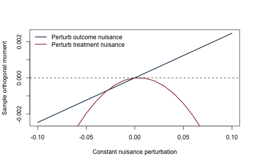
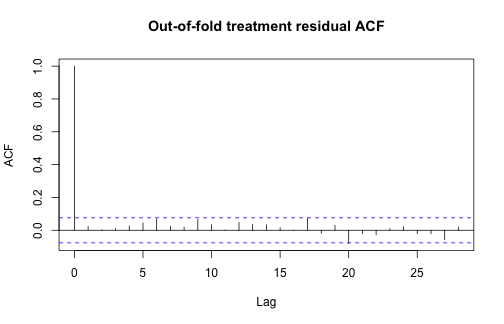
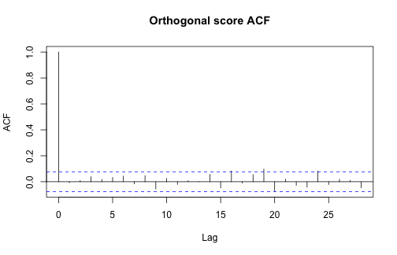

《財務時間序列分析》線上附錄
R15：雙重選擇、正交化與 DML
本附錄對應選讀第 20 章。為了讓真實參數與識別條件可以核對，我們保留固定因子面板的預測變數路徑，但人工生成處置與應變數。這是半合成教學實驗，不是對金融市場的因果估計。
執行條件與設計界線#
- base R 與
knitr；不安裝套件、不下載資料。 - 固定預測變數：
data/processed/ff_qf_macro_industries_1967_2021.csv。 - 真實目標設為 \(\theta_0=0.6\)。
- 人工創新項由固定種子生成，因此可直接比較估計偏誤。
- 時間區塊用於交叉配適；這不宣稱證明一般相依時間序列 DML 定理。
knitr::opts_chunk$set(
echo = TRUE, message = FALSE, warning = FALSE,
fig.width = 7, fig.height = 4.5
)
set.seed(20260716)
讀取每月一次的共同預測變數#
path <- "data/processed/ff_qf_macro_industries_1967_2021.csv"
stopifnot(file.exists(path))
d <- read.csv(path, stringsAsFactors = FALSE, check.names = FALSE)
d$month <- as.Date(d$month)
# common predictors 在同月對各產業相同；取 Manuf 只是每月留一列。
one <- d[d$industry == "Manuf", ]
one <- one[order(one$month), ]
x_names <- grep("^(factor_|macro_)", names(one), value = TRUE)
X0 <- as.matrix(one[, x_names])
storage.mode(X0) <- "double"
keep <- complete.cases(X0)
X0 <- X0[keep, , drop = FALSE]
dates <- one$month[keep]
# 加入少量平方項，使干擾函數字典容許非線性。
X <- cbind(X0, setNames(as.data.frame(X0[, 1:5, drop = FALSE]^2),
paste0(colnames(X0)[1:5], "_sq")))
X <- as.matrix(X)
c(observations = nrow(X), dictionary_columns = ncol(X))
## observations dictionary_columns
## 659 26
半合成的處置與應變數#
我們先用全資料的預測變數建構固定設計尺度，這一步只用來定義教學資料生成過程，不是估計前處理。真正的學習器仍在各訓練折重新估計中心與尺度。
Xs_dgp <- scale(X)
n <- nrow(X)
theta_true <- 0.6
# 處置干擾函數 m0(X)：少數線性訊號。
v <- rnorm(n, sd = 1)
D <- 0.8 * Xs_dgp[, 1] - 0.6 * Xs_dgp[, 2] +
0.4 * Xs_dgp[, 3] + v
# 應變數干擾函數 g0(X)：含線性與平方訊號。
eps <- rnorm(n, sd = 1)
g0 <- 0.7 * Xs_dgp[, 1] + 0.5 * Xs_dgp[, ncol(X0) + 1] -
0.4 * Xs_dgp[, 5]
Y <- theta_true * D + g0 + eps
cor(cbind(Y, D, Xs_dgp[, 1:3]))
## Y D factor_ff_rf factor_ff_mkt_excess
## Y 1.0000000 0.74486772 0.76867917 -0.29541889
## D 0.7448677 1.00000000 0.57631558 -0.39305699
## factor_ff_rf 0.7686792 0.57631558 1.00000000 -0.09515688
## factor_ff_mkt_excess -0.2954189 -0.39305699 -0.09515688 1.00000000
## factor_ff_smb -0.1496878 0.09362099 -0.04342557 0.29760374
## factor_ff_smb
## Y -0.14968777
## D 0.09362099
## factor_ff_rf -0.04342557
## factor_ff_mkt_excess 0.29760374
## factor_ff_smb 1.00000000
由建構可知 \(E(\varepsilon\mid D,X)=0\) 且 \(D-m_0(X)=v\) 有正變異。因果識別是由模擬資料生成過程明示給定，不是 DML 自動產生。
透明的 LASSO learner#
soft_threshold <- function(z, lambda) sign(z) * pmax(abs(z) - lambda, 0)
prep_train <- function(X_train, X_new = NULL) {
mu <- colMeans(X_train)
s <- apply(X_train, 2, sd)
keep <- is.finite(s) & s > 1e-10
train <- sweep(sweep(X_train[, keep, drop = FALSE], 2, mu[keep]),
2, s[keep], "/")
ans <- list(train = train, mean = mu[keep], sd = s[keep], keep = keep)
if (!is.null(X_new)) {
ans$new <- sweep(sweep(X_new[, keep, drop = FALSE], 2, mu[keep]),
2, s[keep], "/")
}
ans
}
lasso_cd <- function(X, y_centered, lambda, max_iter = 5000L, tol = 1e-8) {
n <- nrow(X)
beta <- numeric(ncol(X))
residual <- y_centered
x2 <- colSums(X^2) / n
for (iter in seq_len(max_iter)) {
old <- beta
for (j in seq_along(beta)) {
residual <- residual + X[, j] * beta[j]
z <- sum(X[, j] * residual) / n
beta[j] <- soft_threshold(z, lambda) / x2[j]
residual <- residual - X[, j] * beta[j]
}
if (max(abs(beta - old)) < tol) break
}
beta
}
# lambda_ratio 固定為 lambda_max 的比例；目的是核對演算法，
# 不是宣稱這個比例對所有資料最適。
lasso_fit_predict <- function(X_train, y_train, X_new,
lambda_ratio = 0.08) {
pp <- prep_train(X_train, X_new)
y_bar <- mean(y_train)
yc <- y_train - y_bar
lambda_max <- max(abs(crossprod(pp$train, yc))) / length(yc)
lambda <- lambda_ratio * lambda_max
beta <- lasso_cd(pp$train, yc, lambda)
list(
pred = as.numeric(y_bar + pp$new %*% beta),
beta = beta,
names = colnames(pp$train),
lambda = lambda,
prep = pp
)
}
單一應變數路徑選擇與雙重選擇#
# Outcome selection：只用 Y-on-X 選 controls。
fit_y <- lasso_fit_predict(X, Y, X)
S_y <- which(abs(fit_y$beta) > 1e-8)
# Treatment selection：D-on-X。
fit_d <- lasso_fit_predict(X, D, X)
S_d <- which(abs(fit_d$beta) > 1e-8)
S_union <- sort(unique(c(S_y, S_d)))
estimate_target_ols <- function(selected) {
Z <- if (length(selected)) cbind(D = D, X[, selected, drop = FALSE]) else cbind(D = D)
fit <- lm.fit(cbind(Intercept = 1, Z), Y)
residual <- fit$residuals
XtX_inv <- solve(crossprod(cbind(1, Z)))
meat <- crossprod(cbind(1, Z) * residual)
vcov_hc0 <- XtX_inv %*% meat %*% XtX_inv
c(theta = fit$coefficients["D"], se_hc0 = sqrt(vcov_hc0[2, 2]))
}
naive <- estimate_target_ols(S_y)
double_selection <- estimate_target_ols(S_union)
data.frame(
procedure = c("Outcome selection", "Double selection"),
theta = c(naive[1], double_selection[1]),
se = c(naive[2], double_selection[2]),
selected_controls = c(length(S_y), length(S_union)),
truth = theta_true
)
## procedure theta se selected_controls truth
## 1 Outcome selection 0.6779341 0.03652993 5 0.6
## 2 Double selection 0.6724528 0.03704888 8 0.6
區塊交叉配適與殘差化#
這裡把月份依序分成五個連續區塊。交叉配適用於參數估計，而不是預測用交叉驗證：每個保留區塊的干擾函數預測來自其餘區塊。真實金融應用還需依相依結構考慮間隔、單側折或其他時間序列理論。
K <- 5L
fold_id <- cut(seq_len(n), breaks = K, labels = FALSE)
u_hat <- v_hat <- rep(NA_real_, n)
nuisance_mse <- matrix(NA_real_, K, 2,
dimnames = list(paste0("Fold", 1:K), c("Y", "D")))
for (k in seq_len(K)) {
test_k <- which(fold_id == k)
train_k <- which(fold_id != k)
fy <- lasso_fit_predict(X[train_k, , drop = FALSE], Y[train_k],
X[test_k, , drop = FALSE])
fd <- lasso_fit_predict(X[train_k, , drop = FALSE], D[train_k],
X[test_k, , drop = FALSE])
u_hat[test_k] <- Y[test_k] - fy$pred
v_hat[test_k] <- D[test_k] - fd$pred
nuisance_mse[k, ] <- c(mean(u_hat[test_k]^2), mean(v_hat[test_k]^2))
}
stopifnot(!anyNA(u_hat), !anyNA(v_hat))
theta_dml <- sum(v_hat * u_hat) / sum(v_hat^2)
score <- v_hat * (u_hat - theta_dml * v_hat)
J_hat <- -mean(v_hat^2)
se_iid <- sqrt(mean(score^2) / (n * J_hat^2))
c(theta_dml = theta_dml, se_iid = se_iid, truth = theta_true,
residual_D_variance = var(v_hat))
## theta_dml se_iid truth residual_D_variance
## 0.67446129 0.03708145 0.60000000 1.13395498
nuisance_mse
## Y D
## Fold1 1.749723 1.0313687
## Fold2 1.605757 1.3183358
## Fold3 1.625166 0.9870952
## Fold4 1.346782 1.2914634
## Fold5 1.567657 1.0348461
HAC 評分函數標準誤#
即使本例的人工創新項彼此獨立，預測變數仍保留月資料的時間路徑。下列函數示範對正交分數估長期變異數；一般 DML 時間序列推論還需滿足相依性與干擾函數收斂速率條件。
long_run_variance <- function(g, bandwidth) {
g <- g - mean(g)
n <- length(g)
out <- sum(g^2) / n
if (bandwidth > 0) {
for (lag in seq_len(bandwidth)) {
weight <- 1 - lag / (bandwidth + 1)
gamma <- sum(g[(lag + 1):n] * g[1:(n - lag)]) / n
out <- out + 2 * weight * gamma
}
}
out
}
bandwidth <- 6L
lrv <- long_run_variance(score, bandwidth)
se_hac <- sqrt(lrv / (n * J_hat^2))
data.frame(
estimator = "Cross-fitted partialling-out",
theta = theta_dml,
se_iid = se_iid,
se_hac_L6 = se_hac,
truth = theta_true
)
## estimator theta se_iid se_hac_L6 truth
## 1 Cross-fitted partialling-out 0.6744613 0.03708145 0.03875049 0.6
正交分數的數值敏感度#
小幅擾動干擾函數預測，比較正交矩與未正交殘差迴歸分子的變化。這只是有限樣本數值示範。
moment <- function(theta, ell_error = 0, m_error = 0) {
v_perturbed <- v_hat - m_error
u_perturbed <- u_hat - ell_error
mean(v_perturbed * (u_perturbed - theta * v_perturbed))
}
delta <- seq(-0.10, 0.10, length.out = 21)
moments_ell <- vapply(delta, function(a) moment(theta_dml, ell_error = a), numeric(1))
moments_m <- vapply(delta, function(a) moment(theta_dml, m_error = a), numeric(1))
plot(delta, moments_ell, type = "l", lwd = 2, col = "#173B57",
xlab = "Constant nuisance perturbation", ylab = "Sample orthogonal moment")
lines(delta, moments_m, lwd = 2, col = "#A34045")
abline(h = 0, lty = 2)
legend("topleft", c("Perturb outcome nuisance", "Perturb treatment nuisance"),
col = c("#173B57", "#A34045"), lwd = 2, bty = "n")

診斷與不可省略的限制#
data.frame(
date = dates,
treatment = D,
treatment_residual = v_hat,
score = score
) |> head()
## date treatment treatment_residual score
## 3 1967-01-01 -0.08099446 0.03922279 -0.02090844
## 13 1967-02-01 0.93016223 0.69327883 -0.29361078
## 23 1967-03-01 -0.34729443 -0.07484295 -0.05942027
## 33 1967-04-01 1.59128612 2.07029008 2.13781745
## 43 1967-05-01 2.13154896 1.55148197 -3.58178184
## 53 1967-06-01 0.70999254 0.69828150 0.29313975
acf(v_hat, main = "Out-of-fold treatment residual ACF")

acf(score, main = "Orthogonal score ACF")

var(v_hat)很小代表重疊性或剩餘處置變異不足，不能只靠放大標準誤繼續。- 交叉配適不會修復未觀察混淆；本例的識別來自人工資料生成過程。
lambda_ratio是透明的教學設定。正式分析應在每個外層訓練折內另做內層調校。- 真實月資料若用區塊，各折建構、間隔與 HAC 頻寬都須依相依條件說明。
- 因子面板在此只提供近似實務的預測變數共變異結構；
D與Y是人工生成，不能寫成市場效果。
sessionInfo()
## R version 4.5.2 (2025-10-31)
## Platform: aarch64-apple-darwin20
## Running under: macOS Tahoe 26.5.1
##
## Matrix products: default
## BLAS: /System/Library/Frameworks/Accelerate.framework/Versions/A/Frameworks/vecLib.framework/Versions/A/libBLAS.dylib
## LAPACK: /Library/Frameworks/R.framework/Versions/4.5-arm64/Resources/lib/libRlapack.dylib; LAPACK version 3.12.1
##
## locale:
## [1] C.UTF-8/C.UTF-8/C.UTF-8/C/C.UTF-8/C.UTF-8
##
## time zone: Asia/Tokyo
## tzcode source: internal
##
## attached base packages:
## [1] stats graphics grDevices utils datasets methods base
##
## other attached packages:
## [1] tibble_3.3.0 dplyr_1.2.1
##
## loaded via a namespace (and not attached):
## [1] vctrs_0.7.2 cli_3.6.5 knitr_1.51 rlang_1.1.7
## [5] xfun_0.57 otel_0.2.0 MatrixModels_0.5-4 generics_0.1.4
## [9] glue_1.8.0 grid_4.5.2 evaluate_1.0.5 SparseM_1.84-2
## [13] MASS_7.3-65 lifecycle_1.0.5 compiler_4.5.2 pkgconfig_2.0.3
## [17] quantreg_6.1 lattice_0.22-7 R6_2.6.1 tidyselect_1.2.1
## [21] utf8_1.2.6 splines_4.5.2 pillar_1.11.1 magrittr_2.0.4
## [25] Matrix_1.7-4 tools_4.5.2 withr_3.0.2 survival_3.8-3